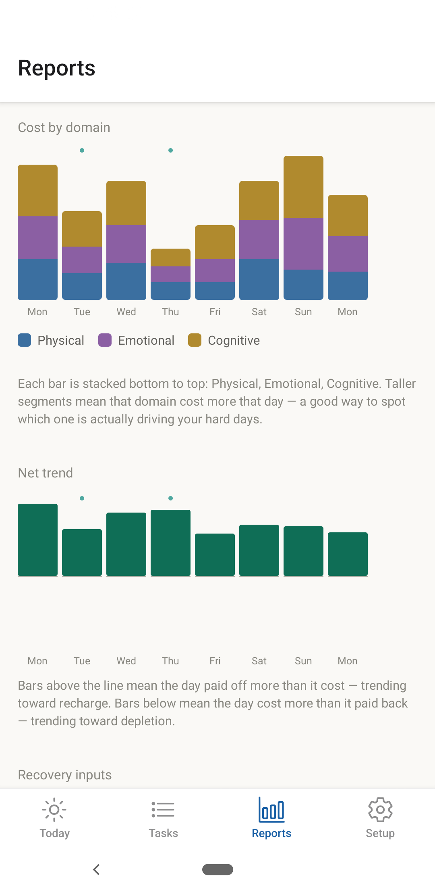
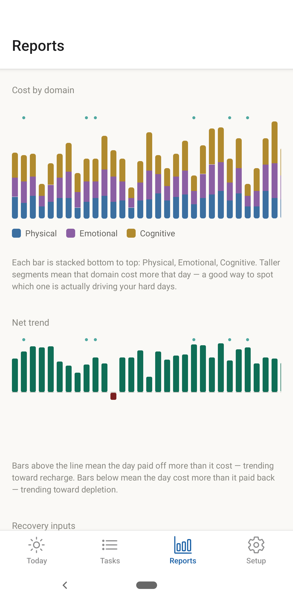
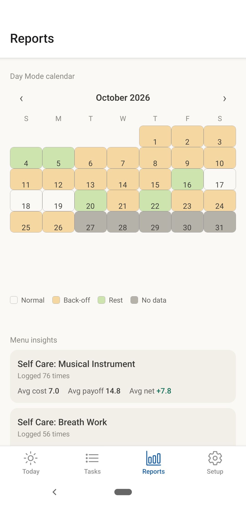
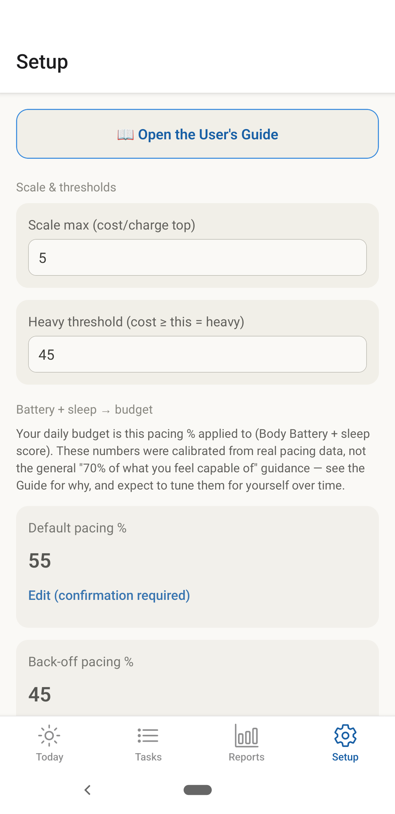
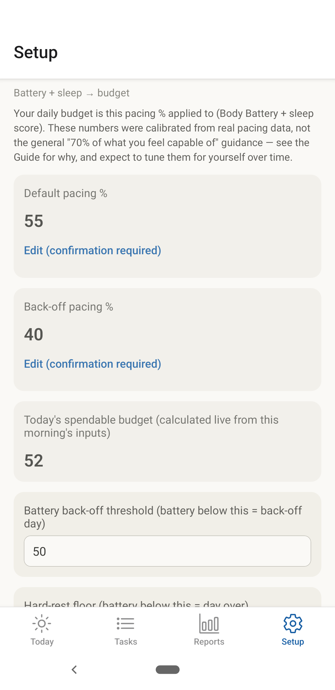
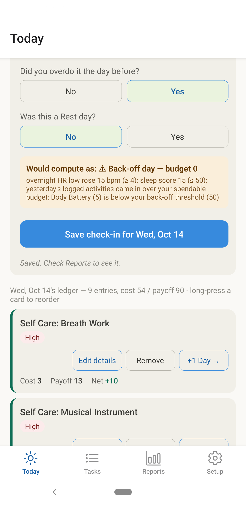
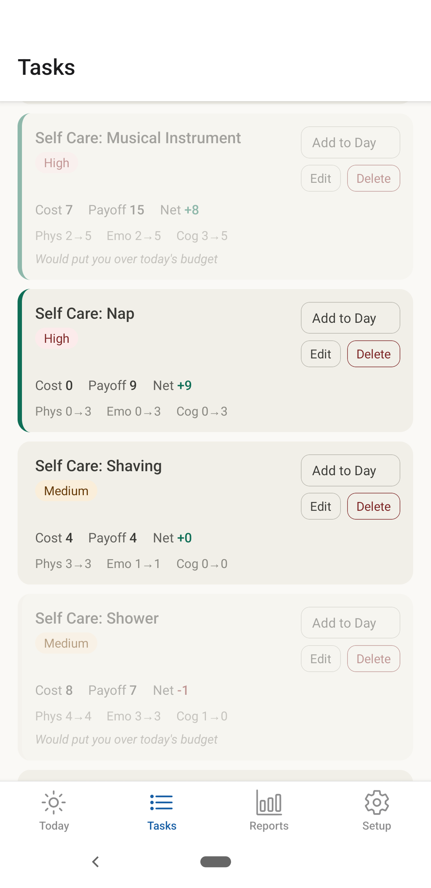
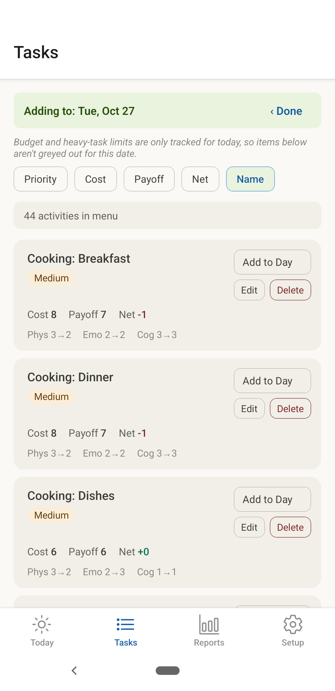
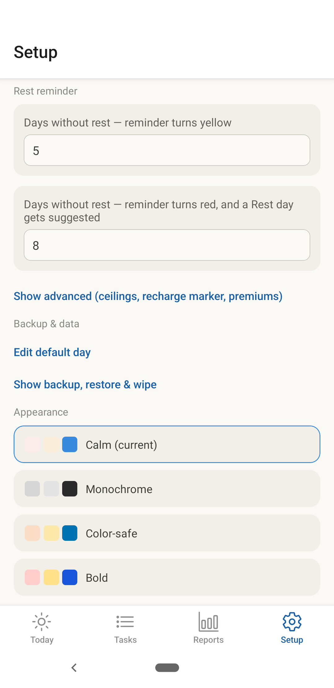

User's Guide
Enough for Today — a pacing app for the chronically ill and the chronically overworking
Whether you're stuck in boom-and-bust cycles because of chronic illness or because of hyper-hustle, nobody can pill, supplement, or stimulant their way out of it. We can no more continually overdraw our bodies than our bank accounts — and like the bank, the body charges interest, and the collectors are brutal.
How the Numbers Work
Think of each day like a battery you wake up with. Enough for Today keeps track of how much you spend and how much you get back — so you don't have to do that math in your head.
Every task has two sides: what it costs you, and what it pays you back. A nap might cost nothing and pay back a lot. A big work task might cost more than it gives. The app tracks this across three kinds of energy — Physical, Emotional, and Cognitive — because a task can drain one of these a lot more than the others, and because you might tolerate some kinds of load differently than others.
Each morning, you tell the app a few things about how you're doing — your Body Battery and your sleep score, plus heart-rate signals if you track them. Body Battery and sleep score together set your Spendable Budget for the day: basically, how much you can safely take on. Anything that trips Back-off — a rough HRV reading, a high overnight heart rate, or flagging that you overdid it yesterday — lowers your pacing percentage, which lowers that budget even on a morning where Body Battery and sleep look fine.
Then, as you log what you actually do, the app keeps a running tally — what you've spent, what it's paid back, and what you have left. You don't have to track any of this yourself. Just log honestly, and the numbers take care of themselves.
Tour: Today
Today is where you'll spend most of your time — it's the home tab, and everything on it reflects right now.
At the top, a colored banner shows the day's mode: a green ✓ for Normal, amber ⚠ for Back-off, or 🛌 for Rest (colors shown are the default theme — see Appearance Themes). Right below it, a budget box shows your Spendable Budget for the day, what you've used, your payoff so far, and what's left.
Tap "Edit this morning's inputs" to open your Body Battery, sleep score, and heart-rate fields — the numbers that decide the banner above. Below that: today's modifiers (a discount for a rough day), and Default Day's "Load default tasks" button, which fills in your usual routine in one tap.
Then comes the ledger — everything logged today, each as its own card with Cost, Payoff, and Net, plus buttons to edit its details, remove it, or move it a day earlier or later. The line above the ledger also always shows how long it's been since your last Rest day.
Use the arrows beside "TODAY," or tap the date itself, to look at any other day.


Tour: Tasks (the Menu)
The Tasks tab is your menu — every activity you've ever defined, in one sortable list. Sort by Priority, Cost, Payoff, Net, or Name using the buttons at the top.
Each item shows its Priority badge and its Cost/Payoff/Net across Physical, Emotional, and Cognitive. "Add to Day" drops it straight into today's ledger; Edit opens its name, priority, and all six numbers; Delete removes it from the menu for good — though any day you've already logged with it keeps its own saved copy, untouched.

Tour: Reports
Reports is one long page, not a set of tabs — just keep scrolling.
You can toggle between Last 7 days / Last 30 days / All time. Touch and drag left or right to scroll a chart once there's a lot of days to show.
Budget adherence shows a bar for every day, color-coded by how the day went.
Cost by Domain breaks down each day's costs into Physical, Emotional, and Cognitive, so you can see where your energy is actually going and which domain is driving your hardest days.
Net trend shows whether days are trending toward recharge or depletion.
Recovery Inputs chart Body Battery, Sleep Score, and HRV, so you can spot recovery trends and the next-day cost of overdoing it.
Day Mode calendar gives a month-at-a-glance view for Normal Days, Back-off Days, Rest Days, and indicates days that may have no data. This is another fast visual reference for status and progress.
Menu Insights shows the average cost, payoff, and net for every activity you log.
Some graph bars will have a tiny green dot above them. This dot indicates the day was declared as a rest day. Generally, rest days should not be over-budget.
Occasionally, a software update changes how your budget is calculated. When that's happened recently, a banner appears at the top providing the date it changed and reminding you that an odd jump in the charts reflects the math changing, not a shift in your wellness. Tap "Got it" and it won't come back until the next real change. Scroll to the very bottom of Reports anytime for "See all changes" — a permanent, dated list of every one of these, so the record's still there even after you've dismissed the banner.






Tour: Setup
At the top of the Setup tab is a prominent link to this user's guide.
Setup is also one continuous page. Scale & thresholds and Battery + sleep → budget cover the numbers behind your daily budget — your pacing percentages and the thresholds that trigger a Back-off day. Rest reminder controls the days-since-rest indicator on Today.
Tap "Show advanced" for heavy-task ceilings and premiums — settings most people won't need to touch. Further down: links out to Default Day and to Backup, restore & wipe, Appearance themes, and a short note that this app isn't medical advice.



Daily Check-In
Each morning, before anything else, spend a minute on a few simple numbers — your Body Battery, how you slept, and heart rate.
No smartwatch? No problem. Leave a field blank and the app just won't use it — it only reacts to a field once you've actually filled it in, so an empty box is never mistaken for a bad reading.
From what you enter, the app works out your day: Normal, Back-off, or Rest. It's not a judgment call — just consistent math, so you don't have to decide every morning whether today "counts" as a hard day.
Forgot to check in, or skipped a day entirely? That's fine. You can always fill it in later — see A Past Day, below.

Day Status
After your morning check-in (Body Battery, sleep score, etc.), the app reports a status for your day — Normal or Back-off — and you can also choose Rest yourself.
Back-off kicks in when Body Battery or sleep score comes in low, overnight heart rate or HRV shifts more than usual, or yesterday's spend was greater than your budget. Back-off lowers your pacing percentage, which lowers your budget, and blocks out heavy tasks from the day.
Rest status is a commitment to zero heavy tasks, regardless of your budget. If you have an especially low Body Battery, the app will pop up a banner recommending you choose a rest day. Today's ledger will also show you how many days it's been since you declared a rest day.
The status of your day appears in the banner, along with the reason for it — a low Body Battery or poor Sleep Score, for example.
The Pacing and Back-off levels calculated by this app begin with default values based on testing by a small group of actual patients. Those values may be either too restrictive or too permissive for you, so you can adjust them in the Setup tab. We recommend you test the system for a week or two before making changes.

Plan Your Day
Today
Tap "+ Add Task" to pick something from your menu and drop it into today's ledger. Once it's there, it's a snapshot copy of that activity's cost and payoff. You can edit today's copy to add a note, or change the priority, cost, and payoff for that day's event, without altering the version stored in your Tasks menu.

Adjusting Your Days
It's normal for plans to change during the day. Every card in today's ledger has Edit details, Remove, and two more buttons: −1 Day and +1 Day. You can remove a task, edit its cost and payoff details, or move it to yesterday or tomorrow without retyping it — on any day you're viewing, not just today.
If you're running over budget, or just feel worse than you did this morning, moving something to tomorrow is usually better than pushing through.

A Past Day
Tap the left arrow, or the date in the middle, to look at an earlier day. Everything you logged that day is real and saved — nothing here is a guess or a reconstruction.
If a day never got a live check-in, you can fill it in afterward. Enter that morning's Body Battery and sleep score, and the app works out what Day Mode and budget the day would have had — so it shows up correctly in Reports, same as any other day.
Today's schedule, and any future days, always save the moment you change them — switching to look at another day never loses what you just entered. Past-day edits are different: to protect against mistaken changes, they must be saved on purpose, and the edit screen will prompt you to do it.

A Future Day
The right arrow — or the calendar — takes you forward as easily as back. A future day's ledger lets you stage tasks ahead of time: block out Thursday's plan on Monday, including the low-cost/high-payoff items you want to make sure land there.
Future days don't have a status or budget, because they don't have a morning check-in yet to gather Body Battery, sleep score, and the rest.

Tasks
The Tasks tab contains your personal menu of tasks and activities that repeat, along with their typical costs and payoffs. This lets you plan your days without rebuilding each one from scratch.
This menu has a couple of special display features.
Grayed-out items: when adding tasks to today, an item may display grayed-out if it would put you over budget for today, if it would exceed your heavy-task limit for today, or if you've selected today as a rest day and the item isn't zero-cost. You can still add a grayed-out item — the app is just warning you, not stopping you. This only applies when you're adding to today: planning a future day never grays anything out, since that day's budget hasn't been calculated yet.
Green-left-margin items: if an item has low cost and high payoff, it's shown with a green left margin to highlight it. Whether you're using the app to manage chronic illness or to prevent burnout, it's worth prioritizing these in your daily budgeting, and having at least a few of them in every day.
When you add a new task, you give it a name, a priority, and the physical, emotional, and cognitive cost and payoff for that task. See Tips & Tricks for ways to get the most from naming and scoring. Edit opens the same name/priority/six-number form you'd use to create something new. Delete asks you to confirm, and removes the item from your menu going forward — any day you already logged with it keeps its own saved copy regardless.




Reports
The Reports tab gives you the power of data — finding things that worked, things that didn't, and the wisdom of trends.
Budget adherence shows how well your activities are matching your resources: bar height reflects your daily spend. Green ones were "in budget" days; red ones are "over budget" days (exact colors depend on your theme — see Appearance Themes).
Cost by Domain shows the balance of loads in your days by domain: Physical, Emotional, Cognitive. Most people are more aware of Physical loads, less aware of Emotional, and even less aware of Cognitive — this chart raises that awareness, so you can manage your energy and organize your days accordingly.
Net Trend shows the payoff minus cost you've defined for your tasks, tallied by day. This can help you plan future days so your low-cost/high-payoff tasks are balancing out the ones with higher costs and lower payoffs.
Menu insights tells you which activities you're doing consistently, and how their net cost is showing up — useful for deciding how to schedule items to balance your load, or for spotting which ones you might want to find a way to lay down.
Setting Up Your App
Default Day
Default Day is a list of Tasks from a typical day — things like "Make Breakfast" and "Breath-work." Then, with a single click, "Load Default Tasks" inserts them all into the day you're editing (Today or a future day). If a task is already listed that day, this won't overwrite or duplicate it.
Set up or edit your Default Day by adding and ordering tasks the way you would for any day, then save it. When you "Load Default Tasks" into an actual day, the Cost and Payoff come live from your Tasks menu — so editing an item in Tasks never requires any changes to your Default Day.

Day Modifiers
Modifiers are a quick way to account for things that aren't Tasks but still work against your budget and well-being — wildfire smoke, a heat wave with no AC, a stressful social interaction, anything that impairs your function. Edit the list to include anything that drains you, then use it to apply an instant discount to your budget and help head off a crash.

Rest Reminder
The thing commonly neglected by people struggling with chronic illness — or by those living in hyper-hustle — is rest. The "need to do things" keeps bumping real rest until "later," where it gets bumped again.
Enough for Today has Rest reminders built in. Every day, the ledger tells you how many days it's been since your last declared, intentional rest day. If you've rested recently, that number shows in green; once it's been more days than you've set, it turns to plain text; and once it passes your second number, it turns red — you'll also get a pop-up suggesting a rest day, once a day, until you reset the counter by actually taking one. (Exact colors follow your chosen theme — see Appearance Themes.) Both numbers default to a short window on purpose: rest is easy to keep putting off, and waiting until a crash forces you into one — or more than one — isn't much of a reminder.

Back-Up / Restore
Setup, Tasks menu, and your Days ledgers all back up and restore separately. This lets you restore your Setup thresholds from an old backup without touching a single day you've logged.
Each backup is a .json file, readable by other software. If you're a fellow tech nerd, you can import a backup file to manipulate or analyze in a spreadsheet, database, or using AI, if you choose.
You're in complete control of your backup storage. It begins by saving to your phone; you can then move the file to Google Drive, email, your computer, or wherever you like. Note that backup files are unencrypted, so manage their storage and transmission accordingly. Restoring a category replaces its current data entirely — there's no partial merge and no undo, so be careful.

Appearance Themes
Enough for Today lets you customize its appearance with different color themes, including a dedicated Color-safe theme built for colorblind readers, and a couple of decorative themes available for sponsors.
Colors mentioned elsewhere in this guide — the green/amber/red used for budget status, the rest-day counter, and so on — reflect whichever theme you've picked, and specifically the default Calm theme. Pick Color-safe instead and the same meanings hold, but the actual colors shift (blue and orange in place of red and green) so they stay distinguishable if you're colorblind.

Tips & Tricks
Task Naming
The Tasks tab has sorting buttons, and creative naming can put the "sort by name" option to
real use. Leading numbers like 0_taskname, 1_taskname force tasks to
sort in whatever order you choose. Try categories, too — something like "WORK" with
subcategories like "bookkeeping" and "shipping," so an item reads "WORK: bookkeeping." That
lets you scroll straight to the category and pick the specific item you want to add.
Task Priorities
Tasks can be given High, Medium, or Low priority status, and a single tap in your Tasks menu sorts them accordingly. A High-priority task can still be cheap, and a Low-priority one can still wipe you out.
Domain Scoring
Any activity can be demanding in some ways but not others. Just the process of listing the demands and payoffs by domain can raise your awareness of what something actually costs, which can help you learn to prevent crashes and burnout — and your notes and scores, tracked over time, can be genuinely useful in conversations with family or health professionals. Take your time and be thoughtful when you first set up a task, and remember to edit that day's copy whenever the actual demands or payoffs differ from the menu item.
The real cost of a task often changes over time, too. If a chronic condition is improving, showering may genuinely cost less than it used to — that's progress, and worth updating in your menu item. If a task is getting harder, account for that as well, and use what you're seeing to help navigate your recovery.
Budget and Log the Good Stuff First
The things we choose to recognize and record reflect — and also shape — our priorities. When we're hustling, or degraded by illness, we tend to narrow our focus to "the essentials," and lose sight of the very things that restore and recharge us, right when those things matter most.
A nap, a walk, playing music, time with a friend — these have a real cost and payoff too, and the app needs to see them to calculate your balance. You need them even more, to rebuild balance if you're ill or living in boom-and-bust cycles.
Logging the good stuff isn't bookkeeping for its own sake — it's the only way to fully reveal where your recharges are actually coming from. In your Tasks tab, items with a low overall cost and a high overall payoff get flagged with a green left margin; when you plan your days, put these in first and prioritize them. It's also the path back to motivation and joy — it helps morale if you're chronically ill, and prevents burnout if you're chronically overworking.
Log Everything
It's tempting to skip logging the mundane stuff — a shower, a meal, doing the dishes — because none of it feels like it costs anything on its own. But your body runs the same math on everything, logged or not.
Logging everything counters the "Starbucks Effect": a daily $6 coffee doesn't feel like real money, until you add up a month of them and see $180 gone.
Each activity matters the way each coffee matters, in the big picture. Skipping the log entry doesn't lower what something actually costs you — it just keeps that cost hidden. Logging everything, not just the obvious big things, is what turns a real, cumulative, biological cost from invisible into something you can actually see — and, if it helps, show to a spouse or a doctor.
MTE (Make Tomorrow Easier)
MTE is a personal-effectiveness strategy that ensures forward progress, even when you're ill or chronically overwhelmed. It's one small thing in your day that moves your actual situation forward, instead of just reacting to whatever's loudest — decluttering a workspace, ordering a part you'll need, jotting down a few notes, writing a guide you've been putting off. Size doesn't matter; direction does.
MTE is already a default item on the Tasks menu and in Default Day for exactly this reason, so it's on your list without you having to remember to add it. Edit its note and its cost/payoff scores for that specific day. Many people like to do theirs early, right after a bit of self-care, while they're fresh — that way you bank a small win early, even on a day when it's all you get.
React / Recreation (slack time)
Life interrupts — things break, people call on you, something urgent jumps the queue. If you haven't planned for it, it gets paid for by borrowing from somewhere else in your day, usually the things that recharge you. Keep a full schedule and these things will wreck it and spike your stress. My friend Charlie used to say his "workout got stolen."
That's what React / Recreation is for. In your Default Day, there's a task by that name, with its cost and payoff numbers set to hold space in your budget on purpose.
If something unplanned comes up, edit that entry's note to say what actually happened, and adjust the scores to match. If nothing comes up, edit the note to say what you spent the time on instead — a phone call, some self-care, actual recreation. Either way, the rest of your day stays protected, and so does your stress level.
Rest Day
Your Today screen always shows, right in the ledger line, how long it's been since your last Rest day. It changes color as the days add up: green while it's recent, plain text once it's been a while, bold red once resting is overdue (exact colors follow your theme — see Appearance Themes).


Once it hits red, Today also shows a prompt reminding you to take a rest day. Whether you're pacing an illness or trying not to burn out, heeding that prompt can genuinely matter. Both numbers — when it turns noticeable, and when it turns red — are yours to set; see Rest Reminder under Setting Up Your App.

Your Data & Privacy
No account to sign up for, no server to log in to, no data ever leaves your device unless you choose to send it somewhere. If you ever wipe your data, that's genuinely it — there's no copy sitting anywhere else to worry about.
Full detail: Privacy Policy.